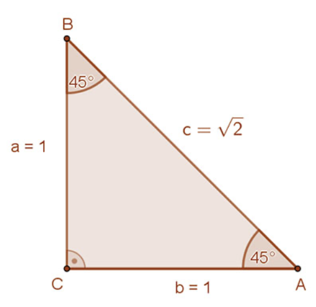
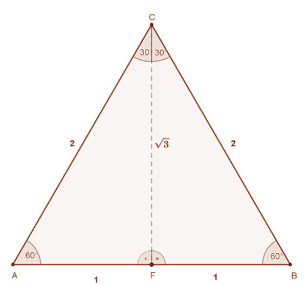
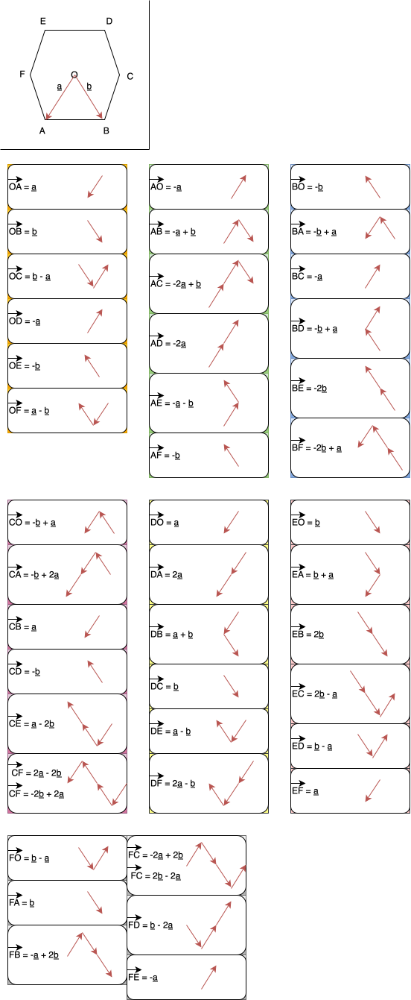

container
Vissza
Nevezetes szögfüggvények
Nevezetes szögeknek szoktuk mondani a $30^{\circ}$-os, a $45^{\circ}$-os és a $60^{\circ}$-os szögeket.
Ezen szögek szögfüggvényeinek pontos értékét az alábbiakban lehet meghatározni.
-
A $45^{\circ}$-os szög szögfüggvényeinek meghatározásához tekintsük az ábrán az egységnyi befogójú derékszögű háromszöget. Ennek hegyesszögei $45^{\circ}$-osak. Átfogóját Pitagorász tétele segítségével kapjuk: $BA = c = \sqrt{2}$.

-
A szögfüggvényeinek definíciója szerint:
$tg45^{\circ} = ctg^{\circ} = 1 \text{ és } sin45^{\circ} = cos45^{\circ} = \frac{1}{\sqrt{2}}$.
-
Ez utóbbi esetben a számlálót és a nevezőt $\sqrt{2}$-vel szorova kapjuk:
$sin45^{\circ} = cos45^{\circ} = \frac{\sqrt{2}}{2}$
-
A $30^{\circ}$-os és $60^{\circ}$-os szögek szögfüggvényeinek meghatározásához egy 2 egység oldalú szabályos háromszögre van szükségünk. Húzzuk meg ennek egyik szögfelezőjét. (A mellékelt ábrán CF szakasz). Ez egyben oldalfelező merőleges is. A mellékelt ábra jelöléseit használva a CF felezőmerőleges szakasz hossza Pitagorász tételének felhasználásával: $CF=\sqrt{3}$ .

- A szögfüggvények definíciója szerint:
- $sin30^{\circ} = \frac{1}{2}$, $cos30^{\circ} = \frac{\sqrt{3}}{2}$, $tg30^{\circ} = \frac{\sqrt{3}}{2}$ és $ctg30^{\circ} = \sqrt{3}$
- $sin60^{\circ} = \frac{\sqrt{3}}{2}$, $cos60^{\circ} = \frac{1}{2}$, $tg60^{\circ} = \sqrt{3}$ és $ctg60^{\circ} = \frac{\sqrt{3}}{3}$
Összefoglaló táblázat:
|
$30^{\circ}$ |
$45^{\circ}$ |
$60^{\circ}$ |
| sin |
$\frac{1}{2}$ |
$\frac{\sqrt{2}}{2}$ |
$\frac{\sqrt{3}}{2}$ |
| cos |
$\frac{\sqrt{3}}{2}$ |
$\frac{\sqrt{2}}{2}$ |
$\frac{1}{2}$ |
| tg |
$\frac{\sqrt{3}}{3}$ |
$1$ |
$\sqrt{3}$ |
| ctg |
$\sqrt{3}$ |
$1$ |
$\frac{\sqrt{3}}{3}$ |
Vektorok

Vissza